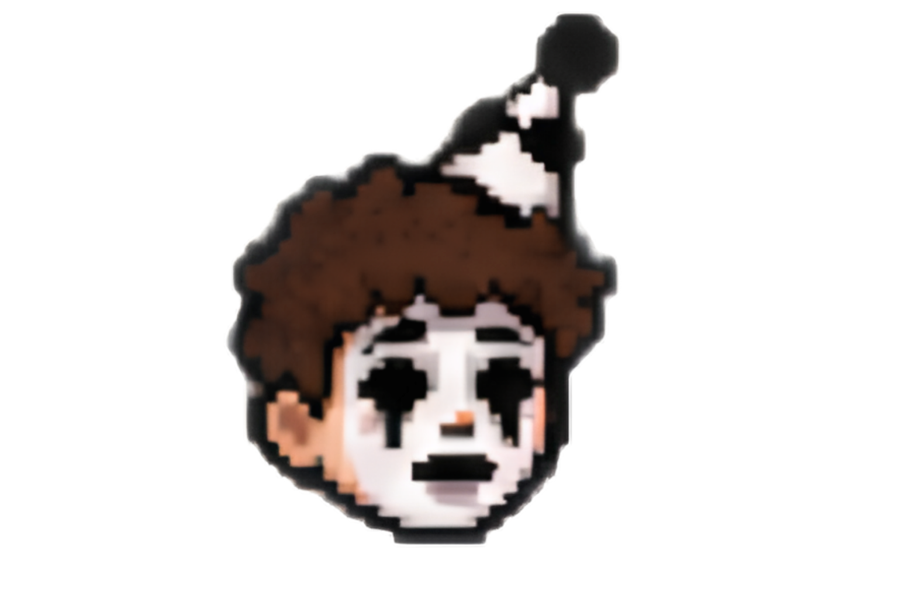

EL MATE
Los enemigos y los bloques rotos con el martillo sueltan material para el mate. Guardá 2, apretá M y que decida la suerte.
Bruno es un payaso triste con un martillo, dos etapas por recorrer y una matetera que no sabe lo que viene. Saltá bloques, esquivá goblins y descubrí qué efecto aleatorio te toma por sorpresa.

BRUNO · EL PROTAGONISTALos enemigos y los bloques rotos con el martillo sueltan material para el mate. Guardá 2, apretá M y que decida la suerte.
Salto, velocidad, vidas, martillo más largo, mareo, alucinaciones y controles invertidos. El HUD muestra cuánto falta para que terminen.
Goombas y Koopas ahora hacen ocurrencias: siestas, trompos, reverencias y patinadas con globos de texto.
Alcance base más largo, golpe simétrico a ambos lados y un extra temporal cuando el mate te da suerte.
Entrá al juego, llegá hasta la bandera y fijate si el mate te ayuda… o te complica. Todo pasa en la E.E.S.T N°1 “Cecilia Berdichevsky”.
▶ EMPEZAR A JUGAR